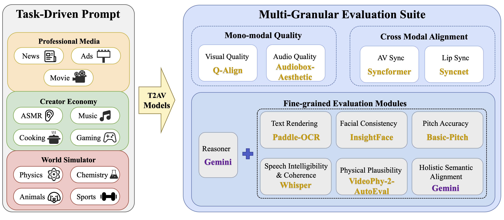
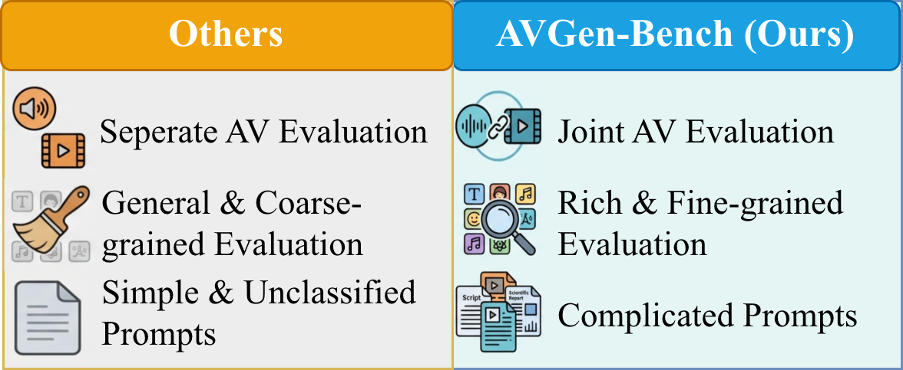

AVGen-Bench evaluates T2AV systems across three granularities: basic
uni-modal quality, cross-modal alignment, and fine-grained semantic
controllability.

Benchmark Comparison
Compared with prior benchmarks, AVGen-Bench emphasizes joint AV
evaluation, richer fine-grained metrics, and realistic complex prompts.

Main Quantitative Results
AVGen-Bench follows the paper's 10-dimension narrative across visual/audio
quality, synchronization, text/face/music/speech controllability, physical
plausibility, and holistic semantic alignment. The table reports `AV`/`Lip`
as complementary synchronization measurements and `Lo-Phy`/`Hi-Phy` as
complementary physical plausibility measurements.
Model
Components
Vis
Aud (PQ)
AV
Lip
Text
Face
Music
Speech
Lo-Phy
Hi-Phy
Holistic
Total
Veo 3.1-fast
Veo 3.1-fast
0.960
6.64
0.21
2.39
75.10
52.77
3.13
94.53
3.68
67.43
86.27
67.87
Veo 3.1-quality
Veo 3.1-quality
0.954
6.77
0.24
3.59
76.53
52.90
5.00
96.09
3.74
68.53
84.10
66.28
Sora-2
Sora-2
0.848
5.91
0.25
4.50
74.84
51.17
7.81
88.63
4.05
78.95
88.89
64.16
Wan2.6
Wan2.6
0.959
7.15
0.30
4.32
76.95
49.27
1.75
89.33
3.69
66.92
80.98
62.97
Seedance-1.5 Pro
Seedance-1.5 Pro
0.970
7.48
0.26
3.43
38.28
54.42
1.88
93.45
3.72
66.88
77.38
62.55
Kling-V2.6
Kling-V2.6
0.906
6.93
0.21
2.30
14.52
57.33
5.00
89.62
3.84
63.92
76.74
61.82
LTX-2.3
LTX-2.3
0.858
7.11
0.36
2.00
54.17
45.06
1.38
86.66
3.99
64.31
65.22
59.97
NanoBanana2 + MOVA
NanoBanana2MOVA
0.890
6.71
0.44
2.70
68.26
41.33
0.59
82.45
3.91
60.95
72.48
58.10
LTX-2
LTX-2
0.828
6.84
0.23
4.76
24.76
48.53
5.75
87.07
4.05
60.20
66.59
56.62
Emu3.5 + MOVA
Emu3.5MOVA
0.911
6.80
0.38
4.83
64.72
48.44
0.62
81.74
3.89
55.85
66.55
56.12
Wan2.2 + HunyuanVideo-Foley
Wan2.2HunyuanVideo-Foley
0.936
6.60
0.23
5.38
48.46
36.23
3.44
53.40
3.90
54.11
60.63
53.29
Ovi
Ovi
0.839
6.31
0.37
5.40
41.36
49.05
11.25
76.49
3.93
52.92
57.45
52.02
Metric direction: higher is better for Vis, Aud (PQ), Text, Face, Music,
Speech, Lo-Phy, Hi-Phy, and Holistic; lower is better for AV and Lip.
Models are sorted by Total in descending order. Bold marks the best score,
and italics mark the second-best score in each metric. Orange tags indicate
proprietary components, while blue tags indicate open-source components.
Fine-grained Evaluation Cases
Detailed workflow of six fine-grained evaluation modules.Representative failure modes revealed by AVGen-Bench.
Failure Demo Videos
Multi-model qualitative failures from Appendix A. Each case shows the
original prompt and side-by-side outputs from Veo 3.1 Fast, Ovi, LTX-2,
and Kling 2.6.
Case 1: Prompted Text Rendering ("Your customers are talking")
Original Prompt
A single wind-up chattering teeth toy clacks continuously against a solid teal background. The scene cuts to a blue screen displaying the white text "Your customers are talking," abruptly followed by rows of multi-colored chattering teeth toys all moving at once, creating a loud chaotic mechanical clatter. A green screen appears with the text "Are you listening?" before cutting to a generic product logo and a "Try it free" button on a white background as the noise ceases.
Veo 3.1 Fast
Ovi
LTX-2
Kling 2.6
Case 2: Trailer Title Rendering ("EIGHTY-SEVEN SECONDS")
Original Prompt
Four-shot high-tempo teaser with clean sync hits. Shot 1: Inside a bank vault, fluorescent hum and distant alarms; a timer on a device beeps faster as a thief whispers, "Eighty-seven seconds, move." Shot 2: Close-up of a glass cutter scoring a pane with a sharp scratch, then a suction cup pops as the circle lifts free, landing on a bass hit. Shot 3: Smash cut to a getaway car; engine revs, tires chirp, and the car fishtails out of a tight alley with gravel spraying and rattling off the chassis. Shot 4: A final slow-motion shot of a duffel bag hitting the pavement with a heavy thud as sirens surge; the title EIGHTY-SEVEN SECONDS slams onto black with a metallic logo sting.
Veo 3.1 Fast
Ovi
LTX-2
Kling 2.6
Case 3: Physical Plausibility (Chladni Plate)
Original Prompt
A top-down view of a black square metal plate sprinkled evenly with fine white sand as a tone generator plays a pure sine wave that sweeps upward in pitch. As the plate begins to vibrate, the rising tone makes the sand suddenly jitter and chatter across the metal, then fall quiet as grains slide into crisp geometric nodal lines that sharpen and rearrange each time the pitch crosses a new resonance.
Veo 3.1 Fast
Ovi
LTX-2
Kling 2.6
Case 4: Physical Plausibility (Briggs-Rauscher)
Original Prompt
A high-speed time-lapse shows a beaker on a magnetic stirrer, the stir plate motor making a steady whir as a stir bar spins. The beaker contains a Briggs-Rauscher mixture (hydrogen peroxide, potassium iodate, malonic acid, and a metal-ion catalyst with starch indicator). While the vortex turns, the liquid repeatedly cycles through several distinct visible states in a rhythmic pattern, switching abruptly and then returning again and again as the stirring continues.
Veo 3.1 Fast
Ovi
LTX-2
Kling 2.6
Case 5: Semantic Misalignment (Vacation Ad)
Original Prompt
A young boy hits a beach ball as a group of children runs past him and jumps into a swimming pool with loud splashes, while a voiceover states, "We went on vacation with a toe dipper." The camera follows the kids underwater as bubbles roar and feet kick past the lens, and the voiceover finishes, "and left with a cannonballer." Finally, the view resurfaces to show a laughing girl in the water as on-screen text reads "Book your family home now."
Veo 3.1 Fast
Ovi
LTX-2
Kling 2.6
Case 6: Music Pitch Accuracy (Single Note A4)
Original Prompt
A zoomed-in tutorial shot of a clean-tone electric guitar fretboard and picking hand. The player frets a single note A4 and plucks it four times with even timing, letting each note ring briefly. The pitch stays stable (no bend, no vibrato), and no other strings ring.